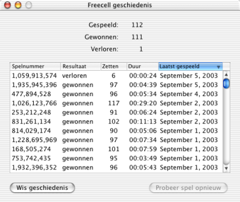

Freecell help
Freecell help
Freecell houdt van alle spelen bij welke u gewonnen heeft en welke verloren. U kunt de lijst bekijken door Geschiedenis te kiezen uit het menu Freecell.

Het overzicht houdt een regel bij van elk spelnummer. Als u een spel verliest, kunt u dit spel(-nummer) blijven proberen totdat u wint. Zo blijft uw spelgeschiedenis er mooi uitzien.